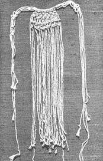
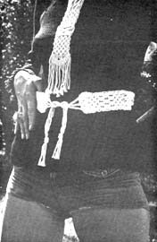
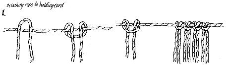
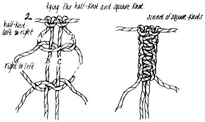
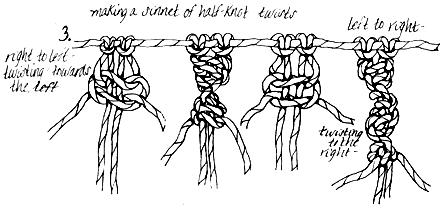
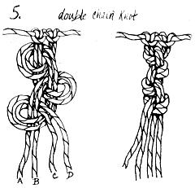
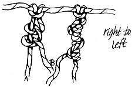
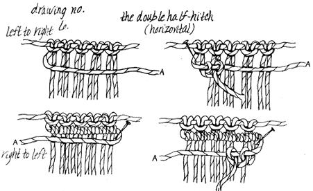
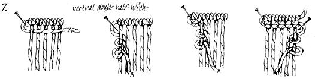
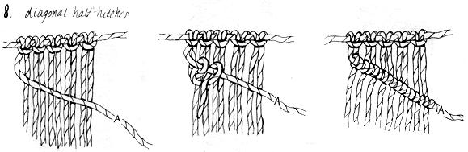

Macramé
Macrame, or the art of creative knotting, may look difficult but its really about as easy as tying your shoes and as inexpensive as a ball of twine. All you actually need to join the growing ranks of macrame addicts are your fingers, some string and the mastery of a few simple knots.
By Ronald Vasaturo
September/October 1971
ARTICLE BY RONALD VASATURO
DRAWINGS BY MARGARET VASATURO
Photos by Robert Arnold
Macrame by llah Murray and Margie Corbett
Model: Hanna Lora Gabriel
Macrame, or the art of creative knotting, may look difficult but it's really about as easy as tying your shoes and as inexpensive as a ball of twine. All you actually need to join the growing ranks of macrame addicts are your fingers, some string and the mastery of a few simple knots.
Knotting has along and rich history. No one knows for certain just how long and how rich but macrame was probably most popular among nineteenth century British and American sailors who often whiled away off-duty hours by knotting bell covers, screens, nets, pipe covers and other useful items. As those sailors must have known, the tactile pleasure the craft has the additional appeal of requiring only the most nominal of investments. What could be more satisfying than to personally create bookmarks, sashes, belts, lovely wall hangings or even rugs . . . for the price of a ball of string from the five and dime? Or for nothing at all if you can find used twine!
You won't need any of the ex pensive macrame books now flood ing the market to get in on this good thing, either. Creative knot ting is so simple that this one short article will give you all the basics you'll need to know to make countless macrame patterns of you own. The most costly book on the subject can give you little more in the way of instruction. Instead, such publications are filled mainly with photographs of various museum pieces. Granted, these pieces may be lovely and even inspiring . . . but how much better to take the time you'd spend admiring them to create your own designs! The particular beauty of this craft is in knowing that its only real limitation is the imagination of the individual.
The tools needed to work most macrame projects generally include nothing more elaborate or expensive than a pair of scissors, a knotting board and some straight pins. A knotting board (the only item I've named that you prob ably didn't recognize) is simply a piece of flat, sturdy material to which a project is pinned while you knot it. Some folks get fancy and use cork, Celotex or foam but I find that heavy cardboard-the bottom of a box, for instance-works just fine. The size of the work will determine the size of the knotting board . . . a bookmark "makes" easier on a smaller holder than that needed for a placemat. If you like, you can mark the board off into measured squares to help you keep the project's growing pattern symmetrical.
As you become proficient with the craft and begin reaching for more complicated effects, you may want to add a few embroidery needles and crochet hooks to your macrame working equipment. They'll allow you to give some items a more finished look by working the loose ends of string back into the project . . . and that's about as heavy an investment in tools as you'll ever need to make.
One of the best ways you'll find to dress up your knotting won't cost you a penny. Just add any junk you've saved and stashed in jars and sewing chests over the years (beads, polished stones, rings, feathers, what-have-you). The final piece is almost sure to have a richer "found art" appearance than you'll have dreamed possible. Consider a piece mounted on driftwood with seashells in the pattern for a wall hanging, as a possible starter.
Although you should use anything you like for string-yarn, linen, silk cord, twine, jute, whatever-it's a good idea to choose something durable for your projects. I say this because you'll sometimes have to undo and redo knots and many materials will fray in the process. Often ordinary kite string works best of all . . . and dying (Rit has some good-looking colors) can make even this mundane material elegant.
Once you have your tools and twine together, you'll need to measure and cut the string. Each piece should be at least eight times the proposed length of the project. That is, cords for a thirty-six inch belt should each be eight yards long. But be generous and cut the strings a little longer . . . just in case.
"C" clamps are a great help when measuring and cutting. Screw a couple onto a table edge the proper distance apart and wrap the string around them before you cut. Door handles and knobs work well, too, if you can get two doors opened or closed so that you have the needed distance between them . . . and if you can then keep the doors from moving while you wrap string around their handles.
Now, get comfortable and find the place on the knotting board that feels "right" as your starting point. I generally lean my cardboard against a chair and work from the top down.
Stick some pins in the board and stretch a piece of string horizontally across the back piece. This is called the holding cord and all the long pieces of string are doubled and mounted (at their exact centers) on this short cord. The long strings should be mounted closely together and knotted fairly tightly . . . but neither these nor following knots should be too tight or the work will tend to buckle. The knot used for mounting the long strings to the holding cord is known as the reverse double half hitch (see Fig. 1)
The more strings you mount, the wider the work will be. If you decide to try a wall hanging, for example, you'll need far more strings than you'd need for a bracelet (the small bracelet would be a better first project). It's best to keep the number of strings a multiple of four, however, since the much-used square knot requires four ends.
You'll find the strings easier to handle on long projects if yon gather the slack, put a rubber band around it and let each string out as needed. This will lessen the confusion that a large, tangled mess of string can create at the bottom of a piece.
There are surprisingly few knots to learn in macrame and all are ultimately traceable to either the clove hitch or the square knot . . . both familiar enough to any boater or former scout. It's the juxtaposition of these basic knots that creates those beautifully complicated-looking works that we've all marveled over.
One of the most versatile ties for macrame is the half knot (see Fig. 2). This is really half a square knot made with four ends of string and is begun from left to right. Place the A (far left cord) over B and C and leave it loose while you slip string D over A on the right side, under both B and C and over A on the left. Then pull A and D horizontally (A to the right and D to the left) while keeping the middle strings steady . . . and you have a half knot from left to right.
The addition of another half knot-this time worked from right to left-will turn your half knot into a square knot (Fig. 2).
Several variations on the half knot can be used to create pleasant angular effects. Repeating just the left to right half knot will produce a series of knots twisting to the right and a twist to the left can be made by repeating only the right to left half knot (see Fig. 3). You can combine these two twists on the same section of string for yet another variation.
The half hitch (Fig. 4)-really half a clove hitch-is worked with only two ends of string. Place end A in front of B, then loop A behind B and over itself. Finish by pulling A horizontally to the left while keeping B stationary. Like the left-hand half knot, this half hitch will twist to the right. To create the opposite effect, hold A stationary and do the over-loop behind-over itself action with B.
Another attractive knot-similar to the half hitch but made with four ends of string-is the double chain knot (Fig. 5). Start from the right and place C and D together over the front of A and B. Then loop CD behind AB and over themselves. Pull CD tight while keeping AB taut. Repeat the knot from left to right and continue alternating sides as you go.
The double half hitch, or clove hitch, is a good knot for making macrame horizontal, vertical and diagonal lines. It's nothing more than two successive half hitches in the same direction. To make a horizontal line from left to right (Fig. 6) place A over the front of all the other strings and keep it straight by looping it around one pin on the left side of the board and securing it with another pin on the right. Loop each remaining string twice overA. If you want more than one row, merely bring A back over the other strings (holding it straight again with pins) and repeat the series of double half hitches working from right to left.
Vertical knots (Fig. 7) are made the same way but involve looping String A twice around each of the other strings, rather than vice versa. Start working from left to right (remembering to keep all strings but A stationary) and, for more rows, repeat the knots as you move back across from right to left.
To create diagonals (Fig. 8), move A to whatever angle you like, pin it and do a double half hitch with each string where it's crossed by A.
Finishing off a piece is a matter of personal taste. You can weave remaining ends into the backside of the project, fringe the tails or, perhaps, hit on something better by playing around with your own combination of knots. With these basic knots, some bangles, beads and the power of your imagination . . . who knows?
And, as you quickly master the fascinating art of macrame . . . perhaps, as often happens, a few neighbors will see your work and want to buy a piece or two . . . or maybe a craft exhibit in the area will include your projects. Macrame may just prove to be the craft that allows you to subsist on a personally satisfying level. Whether or not you ever make a nickel from the art, however, you're sure to find creative knotting easy, very inexpensive and utterly fascinating.
|
 |
 |
 |
|
 |
 |
 |
|
 |
 |
 |
|
 |
 |
|